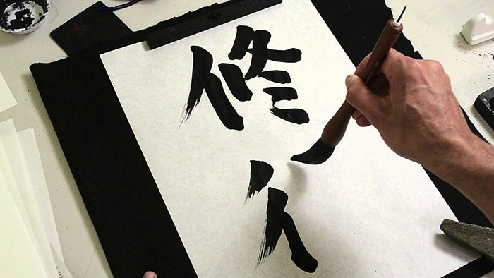
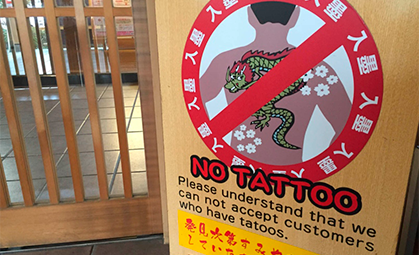

日本
日本Японська культура має довгу історію та багату традиційну спадщину, яка досі має великий вплив на життя японців сьогодні.
Одним з важливих аспектів японської культури є аніме - японська
анімація, яка стала популярною по всьому світу. Аніме виникло в Японії у
другій половині 20 століття. Спочатку воно складалося з коротких епізодів,
які виводили на екрани перед головним фільмом. Згодом, аніме розвинулося в
окрему індустрію, яка заробляє мільярди доларів щороку та займає 60% від
світової анімації. Японські аніме  мають різноманітні теми та жанри,
від наукової фантастики до романтики
та екшну. Воно відрізняється від
традиційної західної анімації своїм
характерним стилем та тематикою,
а також має велике значення для
японської культури. Воно стало
важливою частиною японської
розважальної індустрії та привертає
багато туристів до Японії.
мають різноманітні теми та жанри,
від наукової фантастики до романтики
та екшну. Воно відрізняється від
традиційної західної анімації своїм
характерним стилем та тематикою,
а також має велике значення для
японської культури. Воно стало
важливою частиною японської
розважальної індустрії та привертає
багато туристів до Японії.
Також зараз в більшості випадків аніме є екранізацією манги – японських коміксів, які мають свої особливості відносно стилю малювання та сюжету. Історія манги почалася в Японії в середині 20-го століття, коли з'явилися перші видання цих коміксів. Швидко стали популярними серед дітей та підлітків, а згодом зайняли свою нішу на ринку мистецтва.
Ще одним важливим аспектом японської культури є робота. Робота в Японії має велике значення, і багато японців присвячують їй більше часу, ніж в інших країнах світу. Багато японських компаній мають важливу ієрархію, де велику увагу приділяється старшим та керівникам. Це створює великий тиск на працівників, але також робить роботу більш організованою та ефективною.
Така ієрархія розповсюджується на всі аспекти життя, від роботи до родинних відносин. Вона впливає навіть на мову.
Ще у японців немає лайок. Найобразливішими вважаються аналоги нашого слова "дурень". Невдоволеність зазвичай висловлюється гучністю голосу і інтонацією.
Каліграфія - це мистецтво написання японських ієрогліфів з використанням пензлів та чорнил. Це мистецтво займає важливе місце в японській культурі, а Японія є однією з країн, де каліграфія розвинулася до найвищого рівня. Каліграфія в Японії має довгу історію, яка сягає більше 2000 років. У цьому мистецтві велику увагу  приділяють не тільки вмінню писати красиво, а й дотриманню правил та ритуалів. Наприклад, перед початком написання каліграфічного твору художник повинен підготувати пензель та чорнило, очистити свій розум від зайвих думок та спокійно зосередитися на процесі. Красиво написаний ієрогліф на папері може відображати духовний стан людини, а також її вміння та навички.
У японській каліграфії використовуються різні стилі написання, які можуть відрізнятися за формою та стильовими ознаками. Найвідоміші з них - це стилі "каїшо" та "гьошо". Стиль "каїшо" є класичним стилем, в якому ієрогліфи пишуться з детальною увагою до кожної лінії та кута. Стиль "гьошо" більше експресивний та вільний, і в ньому більше використовуються великі та грубі пензлі. Каліграфія в Японії вважається одним із шляхів до духовного зростання та розвитку. Це мистецтво допомагає людям розвивати свої вміння концентрації та терпіння, а також покращувати свої духовні здібності. В Японії існує багато шкіл каліграфії, де можна вивчити каліграфію та вдосконалювати свої навички.
Також нерідко можна побачити, як люди ходять з відкритими рюкзаками і сумками. Також, люди навіть не замикають свої будинки або свої велосипеди! Ось як безпечно в Японії. Токіо - найбезпечніший мегаполіс у світі. У Токіо настільки безпечно, що шестирічні діти самостійно користуються громадським транспортом.
Фрукти – один з найкращих подарунків! Хоча фрукти в Японії, як правило, дешевшають, традиції минулого зберігаються. У минулі часи було дуже дорого купувати фрукти, тому що в Японії зростає лише кілька фруктів.
Татуювання – це те, що в Японії вважається потворним, причому не тільки з точки зору зовнішнього вигляду, але і пов’язується з бандами і злочинністю. Заборонено купатися в гарячих джерелах, маючи татуювання. В таких місцях потрібно їх заклеювати спеціальними пластирями.
У Японії немає сміттєвих баків, так як все міття переробляється. Відходи поділяються на чотири види. Кожен тип відходів вивозять в певний день і викидати його можна тільки за строго відведених числам. За порушення процедури великий штраф, в де-яких будинках біля тисячі доларів. На вулицях урн так само зовсім немає, тільки спеціальні баки для збору пляшок. Показовий приклад того, що чисто там, де не смітять.
Варто відзначити ще одну типову характерну рису японського виховання дітей – розділення за гендерною ознакою. До виховання дівчаток та хлопчиків в сім'ях різний підхід. Хлопців не допускають на кухню, також їм заборонено брати участь в господарських справах. У шкільному віці навантаження на них набагато більше, ніж у дівчаток - у них є додаткові заняття в клубах і гуртках. Дівчатка в цей час гуляють зі своїми подружками в розважальних парках і базікають про своє, дівоче.
Загалом, японська культура має багато важливих аспектів, які роблять її унікальною та цікавою для вивчення та дослідження. Те що було описано в цьому розділі - лише деякі з них. Якщо ви хочете дізнатися більше про японську культуру, необхідно відвідати країну та зануритися в її унікальний світ.